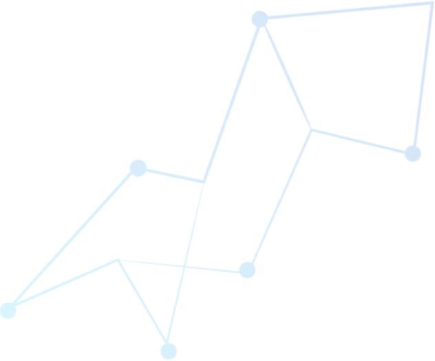
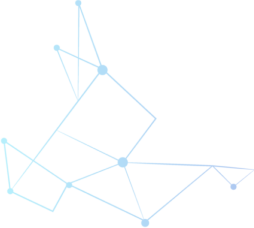
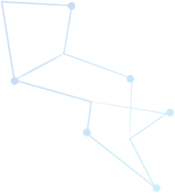
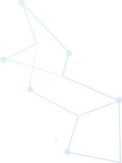
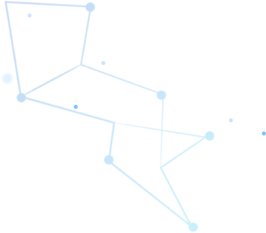
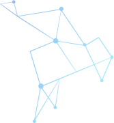
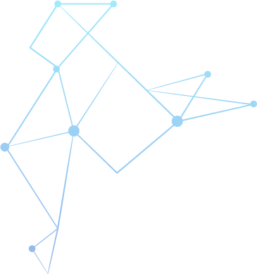

A inteligência artificial e o seu impacto na música Desce a página para começares a ver
A inteligência Artificial na Música
E se eu te disser que a música que estás a ouvir foi composta por uma inteligência artificial?
Estamos numa era onde a inteligência artifical já consegue criar mas a sua utilização nas artes ainda é tabu.
Esta apresentação vai apenas explorar a parte histórica e prática.
    
 
Breve história da inteligência artificial (IA) na música
Enquadramento temporal da evolução da IA no campo da música e som
1960
Primeiro estudo
Em 1960 foi escrita a primeira dissertação por R. Kh. Zaripov sobre música composta por algoritmos utilizando o
Ural-1, um computador mainframe
1965
Primeira partitura de piano criada por uma IA
Em 1965 foi criada a primeira partitura de piano criado por um computador que era capaz de reconhecer padrões em
várias músicas. por Ray Kurzweil
1995
The Verbaziser
David Bowie cria o Verbasizer, uma aplicação para Mac que é baseada na técnica de corte.
2012
Landr
- É fundada a Landr, um serviço de masterização (mistura final) de música online com base numa inteligência
artificial. A empresa também distribui as músicas que masteriza.
2013
Spotify
Torna-se público que o Spotify usa e está a desenvolver uma inteligência artifical que entre muitas coisas,
recomenda músicas semelhantes ao utilizador
2014
Amper Music
É fundada a Amper Music, uma startup que desenvolveu uma plataforma que compõe, produz e executa músicas
inteiramente criadas através de inteligência artificial. Viria a co-produzir o primeiro álbum criado na íntegra
com AI em 2018, com Taryn Southern
2015
Google Brain (e Google Magenta)
A Google integra o seu projeto de inteligência artifical no Youtube, na altura intitulado de Google Brain,
passando este a sugerir conteúdos, nomeadamente música, a partir de correlações estabelecidas pela AI. Não foi a
primeira tentativa de conteúdos filtrados por AI mas é a que se mantém até hoje.
2016
Daddy's Car
A Sony em combinação com uma Flow Machines compôs a primeira música com Inteligência Artificial no estilo de
Beatles, intitulada de “Daddy’s Car”. Mais tarde veio a ser lançada.
2016
Streamerium
Surge a Streamerium, uma plataforma que monetiza conteúdos, nomeadamente música, a partir de uma Inteligência
Artificial e algoritmos de Machine Learning
2018
Hello World
Taryn Southern é a primeira artista a lançar um álbum composto e produzido com a ajuda de Inteligência
Artificial, entitulado de AI, em co-produção com a Amper Music
O primeiro álbum “robótico” é produzido com a Flow Machines em conjunto com vários artistas, entitulado de
"Hello World".
Utilizações práticas da IA
A inteligência artifical pode se aplicada em 3 contextos diferentes:
Composisão Musical
Empresas estão a usar a inteligência artificial para produzir, melhorar e complementar conteúdo músical, pode
ajudar na masterização, composição e mistura do som.
Transmissão / Difusão
É utilizada também para recomendar música ou conteúdo personalizado baseado na atividade do utilizador.
Monetização
A inteligência artificial pode também ajudar na monetização de conteúdo e gerar lucro.
Empresas que utilizam Inteligência Artificial
Abaixo estão algumas empresas, passa o rato em cima dos círculos azuis claros.
Hello World
Taryn Southern é a primeira artista a lançar um álbum composto e produzido com a ajuda de Inteligência
Artificial, entitulado de AI, em co-produção com a Amper Music
O primeiro álbum “robótico” é produzido com a Flow Machines em conjunto com vários artistas, entitulado de
"Hello World".
Hello World
Taryn Southern é a primeira artista a lançar um álbum composto e produzido com a ajuda de Inteligência
Artificial, entitulado de AI, em co-produção com a Amper Music
O primeiro álbum “robótico” é produzido com a Flow Machines em conjunto com vários artistas, entitulado de
"Hello World".